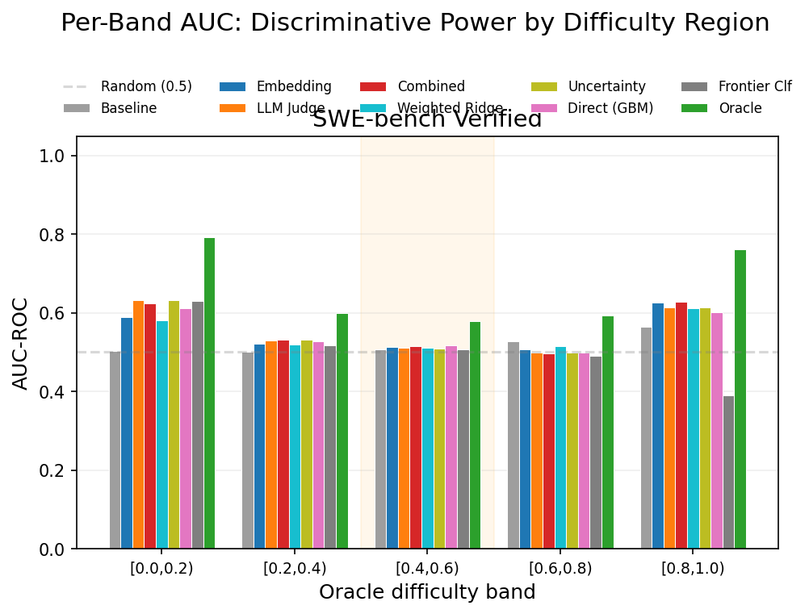

How Uniformly Good Are IRT Difficulty Predictors?
The predictors from Agent Psychometrics work well overall — but not equally well across all difficulty levels.
Key finding: The paper's 0.84 AUC-ROC is not uniform across difficulty levels. Predictors excel at identifying easy and hard tasks, but in the medium-difficulty "frontier" band (40–60% success rate), discriminative power drops to 0.51 — barely above random. This is a fundamental bottleneck: even the oracle only reaches 0.58 in this band. Modified approaches can partially recover frontier identification via improved recall, but the core discrimination limitation persists.
Motivation
Agent Psychometrics (Ge et al., 2026) predicts task difficulty in agentic coding benchmarks from cheap features — LLM-as-a-judge ratings and embeddings — without running any agents. The paper reports 0.84 AUC-ROC overall.
But overall AUC-ROC can mask non-uniformity. We'd expect the predictor to do well on obviously easy or hard tasks. The interesting question is whether it resolves the middle — tasks where outcomes are genuinely uncertain. This matters for:
- Curriculum scheduling. Easy→hard curricula (E2H Reasoner, Goldilocks RL, SPaRFT) need difficulty estimates across the full spectrum, not just the extremes.
- Environment search. When generating RL environments, a cheap difficulty predictor helps filter candidates — filtering out extremely easy or hard tasks is already useful, but being able to also resolve the medium-difficulty range would enable more efficient exploration of the environment space.
We ask: is the 0.84 AUC driven by the easy cases, or is it uniform?
Background
The paper uses Item Response Theory (IRT). Each agent has ability θ, each task has difficulty b:
Trained on a binary response matrix (134 agents × 500 tasks). The paper predicts b from task features via Ridge regression, plugs predicted b̂ back into the IRT formula, and evaluates with AUC-ROC. The Combined predictor (5,120-dim embeddings + 15 LLM judge features) achieves 0.842.
72% of (agent, task) pairs are in the extreme bands (<20% or >80% success probability). Getting those right is easy and inflates overall AUC.
Methodology
We reuse the paper's exact 5-fold CV setup — same seed, same fold-specific IRT models, same predictors. Our overall AUC numbers match Table 2 exactly.
For each of the 67,000 (agent, task) test pairs, we compute the oracle probability oracle_p = sigmoid(θoracle − boracle) using the full IRT model, then bin pairs into five bands:
| Band | Meaning | Pairs | Share |
|---|---|---|---|
| [0.0, 0.2) | Agent almost certainly fails | 22,977 | 34% |
| [0.2, 0.4) | Agent probably fails | 6,019 | 9% |
| [0.4, 0.6) | The frontier — coin flip | 5,492 | 8% |
| [0.6, 0.8) | Agent probably succeeds | 7,192 | 11% |
| [0.8, 1.0] | Agent almost certainly succeeds | 25,320 | 38% |
The frontier is relative to the agent: a task might be frontier for a mid-tier agent but trivially easy for a strong one. We label (agent, task) pairs, not tasks in isolation.
How AUC-ROC works
Each (agent, task) pair has an actual outcome (0 = failed, 1 = succeeded) and a predicted score (the predictor's estimated success probability). AUC-ROC answers: if you pick a random pair that succeeded and a random pair that failed, what's the probability the predictor gave the success a higher score? AUC = 1.0 means the predictor always ranks successes above failures; AUC = 0.5 means it's no better than random.
Why overall AUC can be much higher than per-band AUC: overall AUC includes cross-band comparisons — e.g., a success from the easy band (pred_p ≈ 0.9) vs. a failure from the hard band (pred_p ≈ 0.1). These are trivially correct and dominate the metric. Per-band AUC restricts to pairs within the same band, removing these easy comparisons and isolating the harder question: can the predictor distinguish outcomes among similarly-difficult tasks?
What we measure
Within each band: per-band AUC (can the predictor separate successes from failures among pairs of similar difficulty?), band confusion matrix (when it predicts band X, where does the pair actually fall?), and frontier precision/recall (among predicted frontier pairs, what fraction are truly frontier?).
Results
Predictive power collapses at the frontier
For each predictor and each oracle difficulty band, we compute AUC-ROC on just the (agent, task) pairs in that band. The table shows whether the predictor can separate actual successes from failures within each difficulty region:
| Predictor | [0, 0.2) | [0.2, 0.4) | [0.4, 0.6) | [0.6, 0.8) | [0.8, 1.0) | Overall |
|---|---|---|---|---|---|---|
| Oracle | 0.793 | 0.600 | 0.579 | 0.593 | 0.761 | 0.945 |
| Combined | 0.624 | 0.531 | 0.515 | 0.498 | 0.628 | 0.843 |
| LLM Judge | 0.632 | 0.530 | 0.510 | 0.500 | 0.614 | 0.842 |
| Embedding | 0.590 | 0.522 | 0.514 | 0.508 | 0.626 | 0.824 |
| Baseline | 0.503 | 0.501 | 0.508 | 0.527 | 0.565 | 0.716 |
The [0.4, 0.6) column: all predictors achieve AUC ≈ 0.51, essentially random. The overall AUC is driven entirely by separating the extremes.
Even the Oracle only gets 0.579 in the frontier band — this is the IRT model with access to all data. The limitation is fundamental, not a modeling problem.

sklearn.metrics.roc_auc_score on the filtered subset. Records are pooled across all 5 CV folds. Generated by python -m experiment_new_tasks.run_frontier_analysis --datasets swebench_verified --plots.Frontier predictions are mostly noise
For each (agent, task) pair, we assign it to a predicted band (based on the predictor's output) and an oracle band (based on oracle_p). Each row shows: when the Combined predictor says a pair is in that predicted band, what oracle band does it actually fall in?
| Predicted band | [0, 0.2) | [0.2, 0.4) | [0.4, 0.6) | [0.6, 0.8) | [0.8, 1.0) | N |
|---|---|---|---|---|---|---|
| [0, 0.2) | 72.4% | 11.5% | 6.8% | 5.5% | 3.9% | 22,856 |
| [0.2, 0.4) | 33.6% | 17.6% | 16.1% | 15.0% | 17.7% | 7,725 |
| [0.4, 0.6) | 22.6% | 11.3% | 16.6% | 20.5% | 29.0% | 6,634 |
| [0.6, 0.8) | 13.3% | 9.2% | 9.7% | 20.5% | 47.3% | 8,283 |
| [0.8, 1.0) | 5.8% | 2.4% | 3.7% | 8.0% | 80.1% | 21,502 |
80% accuracy for "easy," 72% for "hard." But when it predicts "frontier," only 16.6% actually land there — the plurality (29%) are easy tasks being misjudged. The baseline is even worse at 11.2%.
Frontier precision and recall
Using a [0.3, 0.7] band (base rate: 17.1% of pairs are truly frontier). Precision = fraction of predicted-frontier pairs that are truly frontier. Recall = fraction of truly-frontier pairs that are identified:
| Predictor | Precision | Recall | #Predicted | #True |
|---|---|---|---|---|
| Combined | 0.301 | 0.368 | 14,002 | 11,445 |
| LLM Judge | 0.295 | 0.380 | 14,737 | 11,445 |
| Embedding | 0.263 | 0.372 | 16,192 | 11,445 |
| Baseline | 0.212 | 0.362 | 19,600 | 11,445 |
30% precision vs. 21% baseline — better than the 17% base rate, but 70% of "frontier" predictions are wrong.
Can Modified Approaches Do Better?
We tested four alternatives, all using the same LLM Judge features and 5-fold CV:
| Approach | Key Idea |
|---|---|
| Weighted Ridge | Upweight frontier tasks in the Ridge loss. Weight = 4p(1−p), peaking at p=0.5. |
| Uncertainty (Bayesian) | BayesianRidge gives a posterior over b. Marginalize: P(success) = Eb[sigmoid(θ − b)]. Uncertain predictions get pulled toward 0.5. |
| Direct (GBM) | Skip the scalar b bottleneck. GradientBoostingClassifier on [θ, task_features] → outcome directly. |
| Frontier Classifier | GBM on [θ, task_features] → is_frontier. Outputs P(frontier), not P(success). |
Frontier discrimination: still intractable
Same per-band AUC analysis as above, now including the four new approaches. Generated identically: filter pairs to each oracle band, compute AUC on the subset:
| Predictor | [0, 0.2) | [0.2, 0.4) | [0.4, 0.6) | [0.6, 0.8) | [0.8, 1.0) | Overall |
|---|---|---|---|---|---|---|
| Oracle | 0.793 | 0.600 | 0.579 | 0.593 | 0.761 | 0.945 |
| Combined (paper) | 0.624 | 0.531 | 0.515 | 0.498 | 0.628 | 0.843 |
| Direct (GBM) | 0.613 | 0.528 | 0.518 | 0.500 | 0.602 | 0.825 |
| Weighted Ridge | 0.582 | 0.520 | 0.512 | 0.516 | 0.612 | 0.820 |
| Uncertainty | 0.633 | 0.531 | 0.510 | 0.500 | 0.614 | 0.842 |
| Baseline | 0.503 | 0.501 | 0.508 | 0.527 | 0.565 | 0.716 |
No approach improves frontier-band AUC. The best (Direct GBM, 0.518) barely exceeds the paper's Combined (0.515). The features don't contain enough signal to predict individual outcomes at an agent's boundary.
What can be recovered: frontier recall
Same precision/recall analysis as above, now including the new approaches. "Predicted frontier" = pairs where pred_p ∈ [0.3, 0.7]; "true frontier" = pairs where oracle_p ∈ [0.3, 0.7]:
| Predictor | Precision | Recall | #Predicted |
|---|---|---|---|
| Combined (paper) | 0.301 | 0.368 | 14,002 |
| Weighted Ridge | 0.281 | 0.464 | 18,925 |
| Direct (GBM) | 0.268 | 0.473 | 20,182 |
| Uncertainty (Bayesian) | 0.268 | 0.640 | 27,335 |
| Frontier Classifier | 0.210 | 0.646 | 35,099 |
| Baseline | 0.212 | 0.362 | 19,600 |
The Uncertainty (Bayesian) approach achieves 0.64 recall — nearly double the paper's 0.37. When BayesianRidge is uncertain about difficulty, the marginalized probability gets pulled toward 0.5, naturally landing more predictions in the frontier band. Precision drops modestly (0.30 → 0.27), but the net effect is that substantially more true frontier pairs are captured. The Frontier Classifier achieves similar recall but with baseline-level precision (0.21), making Uncertainty the better trade-off.
Takeaways
- The original approach's performance is not uniform. The paper's 0.84 overall AUC is driven by the extremes — correctly classifying obviously easy and obviously hard tasks, which make up 72% of pairs. In the medium-difficulty frontier band [0.4, 0.6), where the agent's outcome is genuinely uncertain, all predictors achieve AUC ≈ 0.51 (random). The confusion matrix confirms this: when the predictor says "frontier," only 16.6% of pairs actually are.
- This is a fundamental limitation, not a modeling problem. Even the Oracle — the IRT model trained on all data — only achieves 0.58 AUC in the frontier band. We tested four alternative approaches (weighted loss, Bayesian uncertainty, direct GBM prediction, frontier classification) and none meaningfully improved frontier-band discrimination. The task features (problem descriptions, LLM judge ratings, embeddings) simply don't contain enough information to predict individual outcomes when a task is at an agent's boundary.
- What can be recovered: frontier recall via uncertainty. While we can't improve discrimination within the frontier, we can improve identification of frontier pairs. The Bayesian Uncertainty approach nearly doubles recall (0.37 → 0.64) for finding pairs in the 30–70% success range, at a small cost in precision (0.30 → 0.27). The mechanism is principled: marginalizing over posterior uncertainty in difficulty pulls uncertain predictions toward 0.5, naturally flagging more pairs as frontier. This means the Uncertainty approach captures substantially more of the true frontier pairs, which is useful for applications like building a candidate pool of medium-difficulty tasks for curriculum scheduling or environment search — even though individual frontier predictions remain noisy.